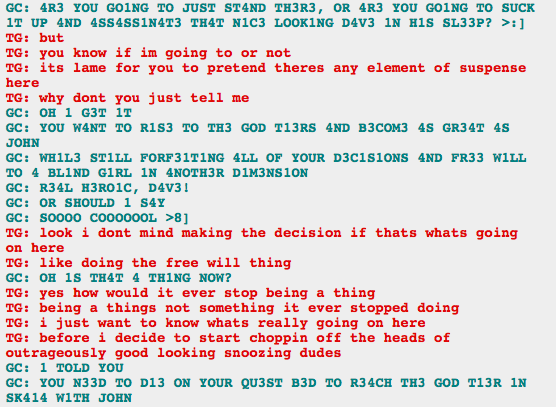
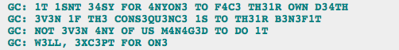

I have pretty much no comment on the whole Dave/Terezi conversation about Dave ascending to Godhood by killing some splinter timeline Dave because all the talk of time travel and splinter timelines and paradox space maybe killing the other Dave, and doing some physics homework, has pretty much melted my brain.